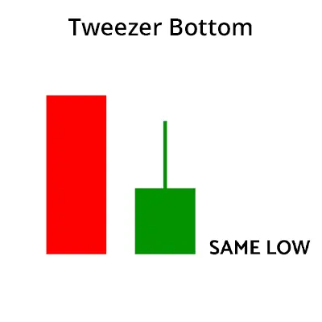

Das Tweezer-Bottom-Muster ist ein Handelsmuster, das das Ende eines Abwärtstrends anzeigt und
auf einen Aufwärtstrend im Aktienmarkt hinweist. Dieses Muster wird von zwei Kerzenleuchtern
gebildet. Der erste Kerzenleuchter ist ein langer absteigender Kerzenleuchter und der
zweite ist ein kurzer absteigender Kerzenleuchter mit einer Körperlänge,
die kürzer ist als die Körperlänge des ersten Kerzenleuchters.
Das Tweezer-Bottom-Muster zeigt einen schwachen Aufwärtstrend an. Wird dieses Muster beobachtet,
kann der Handel im Aktienmarkt auf einen Aufwärtstrend umschwenken.